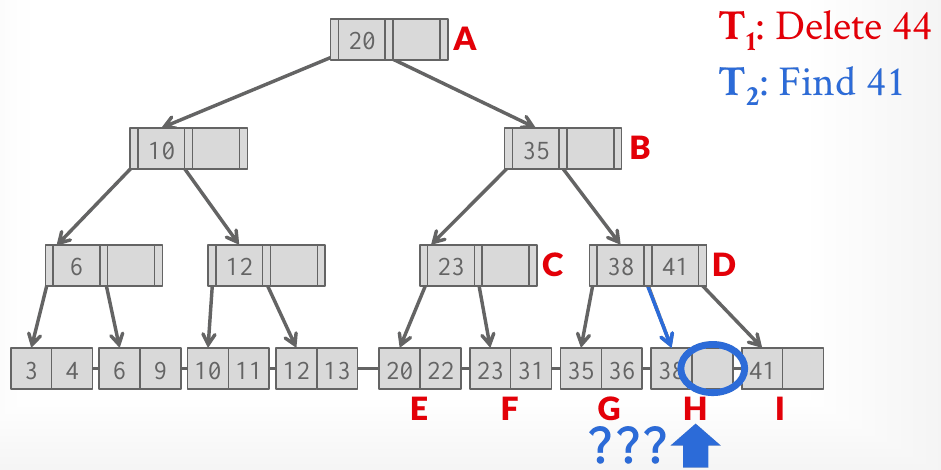
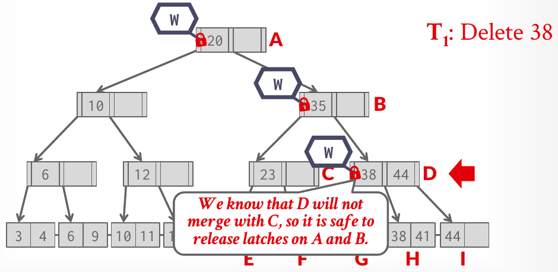
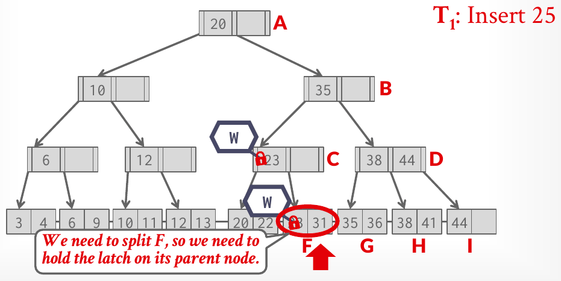
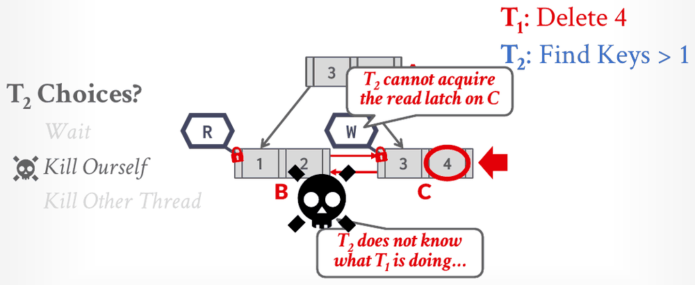

Database Internals in Go · Unit 3 · Lesson 8
Index Concurrency Control: Latch Crabbing
Trace which latches a B+tree search, insert and delete hold under latch crabbing and under optimistic crabbing, explain why leaf scans need no-wait sibling latches, and map the protocol onto Project 2's page guards, including HW3's Q3(d) i, ii, iv and v.
The last lesson ended with the reason a B+tree is harder to latch than a hash table: an operation has to hold a parent and a child at the same time, and a split or merge changes more than one node. Lecture #10 answers with a protocol called latch crabbing, then improves it twice, once for the root, which every writer would otherwise latch, and once for scans that move sideways along the leaves. Project 2's last task asks you to build the improved version on top of your buffer pool.
Lesson 3: in the lecture's Insert 16 example, nodes hold at most 4 keys, and both the leaf [13, 14, 15, 17] and the root [5, 9, 13, 19] are full. Which nodes does the insert change or create?
Lesson 4: in the lecture's Delete 19 example, the leaf [20] merges with [21, 23], and its parent loses the separator 21, leaving [19] with two children. What happens next?
Unit 2, Lesson 8: why must DeletePage refuse to delete a page that is pinned?
What can go wrong
Slide 20 names the two problems a concurrent B+tree must prevent: threads modifying the contents of the same node at the same time, and a thread traversing the tree while another thread splits or merges nodes. The first is what a node's latch is for. The second needs more, as the lecture's example shows. Every node in it holds at most 2 keys, and its nodes are labelled with letters.

Each node could have had its own latch here, and each thread could have taken it before touching the node, and T2 would still have failed. Its mistake was releasing D before it held H: in that gap, T1 changed both. The fix is to keep the parent latched until the child's latch is in hand.
Latch crabbing
Latch crabbing, also called latch coupling, is the lecture's protocol for that. A thread moves down the tree like this:
- Get the latch for the parent.
- Get the latch for the child.
- Release the latch for the parent if it is "safe".
A safe node is one that won't split or merge when the operation updates it. For an insert, a node is safe if it isn't full: one more entry, even one pushed up from below, fits. For a delete, it is safe if it is more than half full: losing one entry can't make it underflow. If the child is safe, no change below it can reach the parent, so the parent's latch protects nothing the thread still needs.
Slide 23 turns this into two rules:
- Find: start at the root, take a read latch on the child, then release the parent, and repeat down to the leaf. A search never changes a node, so for it every node is safe.
- Insert and delete: start at the root and go down taking write latches. Once a child is latched, check whether it is safe; if it is, release the latches on all of its ancestors.
A writer therefore holds a stack of write latches: everything from the deepest safe node it passed down to its current node. The notes add a point HW3 asks about. The order in which a thread releases those latches doesn't matter for correctness. For performance, it is better to release the latches higher up first, because they block access to a larger part of the tree.
#10 Latching in Data Structures, "Latch crabbing technique" (42:35), slides 22–27: the protocol, then Find 38, Delete 38, Insert 45 and Insert 25 on the lecture's tree, latch by latch.
Crabbing through the lecture's tree
The examples use the tree from the figure as it was before T1's delete: A [20] at the root, B [35] below it, then C [23] and D [38, 44], and the leaves E [20, 22], F [23, 31], G [35, 36], H [38, 41] and I [44]. With at most 2 keys per node, a node with 1 key is safe for an insert and unsafe for a delete, and a node with 2 keys is the opposite.
Find 38 takes a read latch on A, then on B and releases A, then on D and releases B, then on H and releases D. It never holds more than two latches.
Delete 38 takes a write latch on A, then on B. B has a single key, so a merge below could empty it, and A stays latched. Then D: it has two keys, so it is safe, and the thread releases A and B. H has two keys too, so D is released, and 38 is deleted from H.

Insert 45 takes a write latch on A, then on B. B has room for one more key, so A is released. D [38, 44] is full, so B stays latched. I [44] has room, so the thread releases B and D and inserts 45 into I.
Insert 25 goes A, then B (A released), then C [23], which has room (B released), then F [23, 31], which is full. F will split, and the split adds an entry to C, so C stays latched. F splits into F [23, 25] and a new leaf J [31], and 31 goes into C, which becomes [23, 31].

The root bottleneck and optimistic crabbing
Slide 28 asks what the first step of every update example was. All three took a write latch on the root. With many threads, that one latch becomes a bottleneck: every insert and delete in the whole index waits for it, even though most of them only change a leaf. Slide 29 builds on that: most modifications to a B+tree don't split or merge anything. The improved algorithm, from Bayer and Schkolnick's 1977 paper, is optimistic latch crabbing:
- Search: the same as before.
- Insert and delete: take latches as if for a search, read latches crabbing down the tree, and take a write latch only on the leaf. If the leaf is safe, do the update. If it isn't, release every latch and restart the operation with the pessimistic protocol from the last section, write latches from the root down.
With optimistic crabbing, Delete 38 read-latches A, B and D, then write-latches H. H won't merge, so the guess was right and the delete proceeds without a write latch on any inner node. Insert 25 read-latches A, B and C, then write-latches F, finds it full, and restarts.

The slide names the cost: when the guess is wrong, the read latches taken on the first pass were wasted. The notes mention a variant in which a thread upgrades a read latch to a write latch in place, which might avoid restarting from the root, and call it less straightforward. Go's sync.RWMutex doesn't offer it at all (Lesson 7), so in Go a restart is the way.
One edge case: when the tree is a single leaf, the root is that leaf, and the optimistic pass's write latch on the leaf is a write latch on the root. HW3 Q3(d)ii's statement below ignores this case.
#10 Latching in Data Structures, "Optimistic latching" (52:09), slides 28–32: the root bottleneck, the optimistic protocol, and the Delete 38 and Insert 25 examples.
Leaf scans and no-wait latches
Every example so far took latches top-down: a thread only asks for a latch on a node below the one it holds, and if that latch is taken, it waits. The notes conclude that this can never deadlock. Every thread takes latches in the same order, from the root toward the leaves, which is the same kind of rule as Project 1's lock order.
Range scans break that order, because they move sideways from leaf to leaf through the sibling pointers, and a scan can run in either direction. A reader still crabs: in slide 34's example, T1 finds the keys less than 4, starts at leaf C and moves left to its sibling B, and the slide says not to release C until T1 holds B. Two readers moving in opposite directions, as in slide 35, cause no trouble, because read latches are compatible.
With a writer involved, sideways moves can deadlock. In slide 36, T1 is deleting 4 and holds a write latch on leaf C. T2 is scanning for keys greater than 1, holds a read latch on B and needs C. T2 can't tell what T1 will do next. If T1's delete makes C underflow, T1 may need B to borrow from or merge with, and then each thread would hold the latch the other is waiting for. The slide gives T2 three choices: wait, kill itself or kill the other thread. It picks killing itself.

Slide 37 states the rule. Latches don't support deadlock detection or avoidance, so the only defense is coding discipline: the protocol for latching a leaf's sibling must support a no-wait mode, in which a request for a latch that isn't available fails at once instead of blocking. The data structure must cope with the failure, usually without the application noticing. The notes describe what coping means: abort the operation quickly, releasing every latch it holds, and restart it. A thread may wait a little before restarting, depending on how much work it has done. If a scan keeps failing on a busy index, the notes leave the fix to a higher-level scheduler rather than the data structure.
Slide 38 adds how a writer keeps its changes from being seen half done. Each worker records the leaf changes it makes in a private write-set: the IDs of the nodes it modified and the keys it inserted or deleted. It holds the write latches on those nodes until the operation finishes. If it can't get a write latch it needs, it rolls back the changes in its write-set and aborts by releasing all its latches.
Go has no-wait latching built in: sync.RWMutex's TryRLock and TryLock return false at once if the latch is taken. Their doc comments warn that correct uses are rare and often a sign of a deeper problem; a sibling latch during a leaf scan is one of the rare correct uses. Where C++ code throws, Go code returns an error. The Project 2 writeup says the iterator isn't tested for thread-safe leaf scans, but that a correct implementation would throw an exception when it can't get the latch on its sibling, to avoid potential deadlocks.
#10 Latching in Data Structures, "Leaf node scans" (59:33), slides 33–38: scans in both directions, the deadlock in the figure, the no-wait rule and write-sets.
What this means for Project 2
Project 2's Task #4 makes the B+tree safe for concurrent use, and the writeup asks for the optimistic latch coupling, or crabbing, technique from class: take latches on pages as needed, and release the latches on parent pages as soon as it is safe. Two limits come with it. A single global latch around the whole index isn't allowed. And the latches are the ones you already built: the writeup recommends ReadPageGuard and WritePageGuard. In this course you'll write the tree in Go, in the btree/ package that Unit 4 introduces. Several of this lesson's ideas map directly onto it:
- A latch on a tree node is a page guard. Getting the child's latch means fetching the child page as a read or write guard; releasing an ancestor means calling
Dropon its guard. A guard also holds a pin, so a page you still hold can't be evicted under you. - A writer's stack of latches is a stack of guards. BusTub's C++
Contextclass keeps it inwrite_set_, a deque ofWritePageGuards along the access path, with aread_set_beside it. The writeup's tip: a node's parent is at the back ofwrite_set_. - The root's page ID lives in a separate header page, and slide 44's hint is to protect it. A writer that may change the root has to hold the header page's write guard too, and it can release it once the root is known to be safe. The writeup describes the order: every thread acquires latches from the header page down, and releases them in the same order, from the header page to the bottom, which is the higher-latches-first rule from the notes.
- Holding a parent's guard while fetching a child is the case Unit 2, Lesson 7's lock order was built for: the frame latch you hold comes first, the pool latch second, so the fetch can't deadlock with another goroutine.
- Never take the same read latch twice in one goroutine; Lesson 7 showed how a waiting writer turns that into a deadlock.
Slide 43 adds the order of work: make splits and merges correct single-threaded before you start on concurrency.
Work it out
Both exercises use the tree from the "Crabbing through the lecture's tree" section, with at most 2 keys per node.
-
What to think about
On the first pass, which mode does an optimistic writer use for inner nodes, and which for the leaf? What decides whether it restarts?
The method
Crab down with read latches as a search would, A to B to D, releasing each parent once the child is latched. Take a write latch on the leaf that 45 belongs in, then check whether that leaf is safe for an insert.
The result
R on A; R on B, release A; R on D, release B; W on I, release D. I [44] has room, so it is safe: 45 is inserted, I becomes [44, 45], and the W latch on I is released. No restart, and no write latch on any inner node. The pessimistic protocol would have write-latched A, B and D on the way.
-
What to think about
T1 needs a write latch on D, both to get down to I and, later, to change D's separator. Can it get that latch while T2 holds a read latch on D? When does T2 let go of D?
The method
Follow T2: it releases D only after it holds H. Then follow T1: which latches does it hold when it reaches D and I, and which latch does it need to move 41 out of H?
The result
T1 write-latches A and B (B is unsafe), then waits for D, which T2 holds in read mode. T2 read-latches H, releases D, and finds 41 in H. T1 then latches D (safe, so it releases A and B) and I, which has one key and is unsafe for a delete, so D stays latched. Deleting 44 empties I; to move 41 over, T1 needs a write latch on H, and it waits until T2 releases its read latch. Had T1 latched D first, T2 would have waited at D and then followed D's new separator to I. Either way there is no gap in which T2 can be misdirected.
The homework behind these questions
The questions marked HW3 come from CMU's Homework #3: Question 3, with the original figures. Work each one out on paper first, then click the option you got. The quiz tells you at once whether it matches CMU's official answer, and explains why. To compare your working step by step, open the official solutions for Question 3.
Check your understanding
HW3 Q3(d)i: during latch crabbing, in what order must a thread release the latches it holds?
HW3 Q3(d)ii: under the optimistic latch crabbing scheme from class, when does an insert or delete thread take a write latch on the root?
HW3 Q3(d)iv: under optimistic latch crabbing, a read-only thread moves from a node to its child, or from a leaf to its sibling during a scan. Which is correct?
HW3 Q3(d)v: what does "no-wait" mode for acquiring sibling latches during a leaf scan do?
On the lecture's tree, T1 runs Insert 25 with basic (pessimistic) latch crabbing. C is [23] and the leaf F is [23, 31], which is full. Which latches does T1 hold when it reaches F?
Primary sources: CMU 15-445/645 Fall 2025 Lecture #10 slides 20–46 and notes (section 5); Homework #3 Question 3(d) i, ii, iv and v and their official solutions; the Project #2 writeup (Task #2, Task #4, Requirements and Hints, Common Pitfalls); BusTub src/include/storage/index/b_plus_tree.h (Context) and src/include/storage/page/b_plus_tree_header_page.h at commit d49b823; the Go documentation for sync.RWMutex.